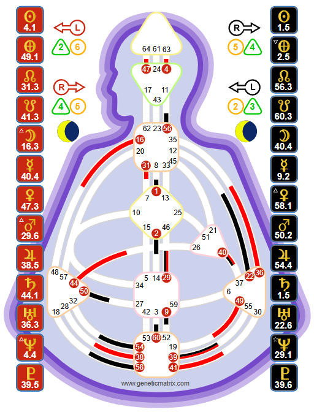

The mirror of humanity. With no defined centers at all, Reflectors are the most open, the most sensitive, and the most fundamentally different Type. They take in the world, amplify it, and reflect it back - serving as barometers for the health of their communities.

Tools, not doctrine. The Human Design System was transmitted through Ra Uru Hu beginning in 1987. Genetic Matrix provides these tools for your own exploration and experiment. The chart shown is Richard Burton - a Reflector.
A Reflector is someone with no defined centers. All nine centers in their bodygraph are open - completely white. This is the rarest configuration in Human Design, occurring in approximately 1% of the population. It creates a being unlike any other Type.
With no fixed definition, Reflectors have no consistent energy pattern of their own. Instead, they sample and amplify the energy of everyone and everything around them. In a room full of Generators, a Reflector absorbs and amplifies Sacral energy. With a Manifestor, they take on initiating energy. Alone, they return to a kind of energetic baseline that is fluid, open, and deeply sensitive.
This openness is not weakness. It is the Reflector's extraordinary gift. They experience all possible configurations of energy - which means they can see what is healthy and what is not, what is working and what is broken. They are the mirrors and barometers of their communities.
Key Insight
The Reflector's greatest challenge is identity. In a world that values consistency - "know who you are, be the same person every day" - the Reflector's fluid nature can feel like a problem. It is not. Consistency is not their design. Their identity is in the reflection itself: the ability to show others what they cannot see about themselves.
The Reflector's Strategy for major decisions is to wait a full lunar cycle - approximately 28 to 29 days. This sounds extreme, and it is. But it is rooted in mechanics.
The Moon moves through all 64 Gates in approximately 28 days. As it transits, it activates different centers and channels in the Reflector's completely open chart. On one day, the Reflector might feel certain about a decision. A week later, with different activations, they might feel completely different. By waiting the full cycle, the Reflector experiences all possible activations and can identify what remains consistent versus what was temporary conditioning from a transit.
This does not mean Reflectors cannot make any decisions for 28 days. Small, everyday choices do not require the full cycle. But for major life decisions - career changes, relationships, moves - the lunar cycle provides the clarity that no other process can.
Reflectors benefit enormously from tracking the Moon's transit through their chart. Knowing which Gates and Centers are activated on any given day helps them distinguish between their own consistent knowing and the influence of the current transit. Over time, patterns emerge - certain lunar activations consistently bring clarity, while others bring confusion. This is invaluable self-knowledge.
The Reflector aura is resistant and sampling. It samples the energy of others without fully absorbing it in the way that Projectors absorb. There is a Teflon-like quality - the energy comes in, is reflected back, and does not stick permanently. This is what makes Reflectors such effective mirrors: they show others their own energy without taking it on as their own identity.
The sampling quality means Reflectors experience each person's energy vividly - they can feel what a Generator feels, sense what a Manifestor is about to do, perceive a Projector's gift. But because the energy does not stick, the Reflector is always moving, always shifting, always reflecting something new.
Surprise is the Reflector's signature. When a Reflector is in the right environment, surrounded by healthy energy, living according to their lunar Strategy, life unfolds in ways that continually surprise and delight them. The surprise comes from the Reflector's openness: because they are not fixed in any configuration, life can bring them experiences that no other Type can access.
Disappointment is the not-self theme. Reflectors become disappointed when they are in the wrong environment, when they make decisions too quickly (without waiting the lunar cycle), or when they try to be consistent in a way that is not their design. Disappointment often accumulates slowly - a gradual realization that life is not delivering what was expected.
The most common source of Reflector disappointment is environment. Because they take in and amplify everything around them, being in the wrong place - the wrong city, the wrong office, the wrong community - creates a persistent sense that something is off. Finding the right environment is the single most transformative thing a Reflector can do.
For Reflectors, environment is everything. More than any other Type, Reflectors are shaped by their surroundings. The energy of the place - the people, the physical space, the quality of interactions - becomes the Reflector's daily experience. In a healthy environment, the Reflector thrives, reflects wellbeing, and serves as a mirror for the community's success. In a toxic environment, the Reflector absorbs that toxicity and breaks down.
This is why the most important decision a Reflector makes is where to be. The right city, the right neighborhood, the right office, the right home. When the environment is right, everything else follows. When it is wrong, nothing else can compensate.
Key Insight
Reflectors often report that when they finally find the right environment, it feels like coming home for the first time. The chronic sense of being "off" dissolves. Energy stabilizes. Disappointment transforms into surprise. If you are a Reflector who has never felt settled, the environment is the first place to look.
The Reflector's relationship with identity is unlike any other Type. With no fixed definition, there is no consistent "self" in the way that other Types experience it. The Reflector's identity shifts daily as the Moon activates different parts of their chart and as they interact with different people and environments.
This can feel disorienting in a culture that demands consistency. But the Reflector's gift is precisely this fluidity. They can be anything, experience everything, understand all configurations of energy. They are the one Type that can truly say: "I have felt what it is like to be every other Type."
The practice for Reflectors is not to find a fixed identity but to enjoy the ride. To appreciate the fluidity as a gift rather than a problem. To recognize that some days you will feel like a Generator, some days like a Projector, some days like a Manifestor - and that all of it is correct, because none of it is permanently you.
On Genetic Matrix: Generate a free Foundation chart to confirm your Type. Reflectors benefit particularly from tools that track the Moon's transit through their chart. Pro features reveal your Variable, Profile, and the specific ways your openness operates.
The experiment: Begin tracking the Moon through your chart. Notice how you feel on different days as different activations occur. For one month, make no major decisions - instead, journal your feelings and see what remains consistent through the full cycle. This is the beginning of learning your own lunar pattern.
The celebrity database: Reflectors are rare, and finding other Reflectors can be profoundly validating. Explore Reflectors in Genetic Matrix's 87,000+ celebrity database. See how this rare configuration manifests in public figures who have navigated a world not designed for their openness.
Overview of all Human Design Types - Strategy, Authority, and aura mechanics.
The life force. Sacral energy, response, and the path to satisfaction.
The multi-passionate hybrid. Speed, response, and informed action.
The guide. Recognition, invitation, and the path to success.
The initiator. Independence, informing, and the path to peace.
See your full chart - your open centers, lunar transit patterns, Profile, and the complete architecture of your Reflector design.
Try free with Starter plan →